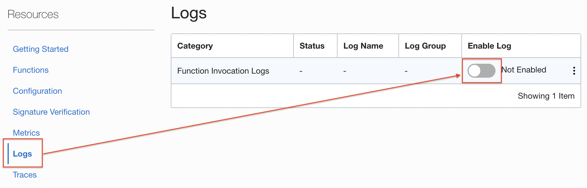
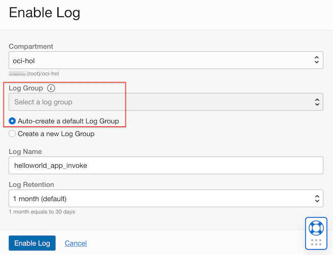
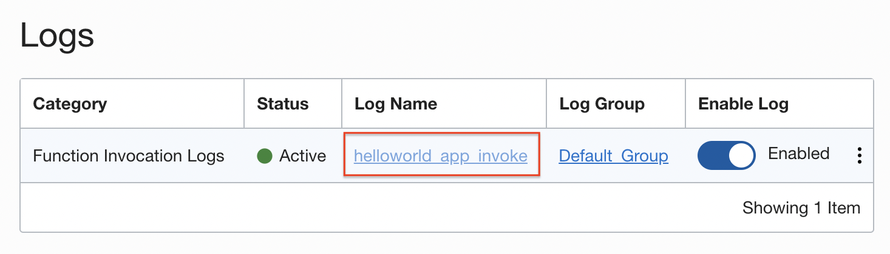
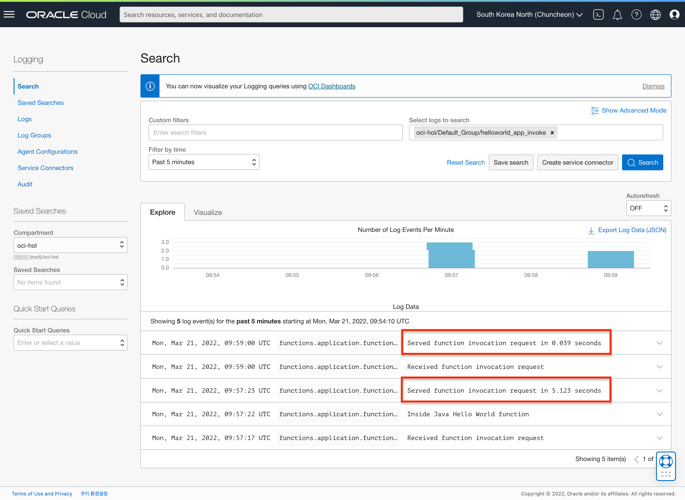

Support for function invocation logs
Oracle Function에 대해서 Logging을 활성화 한 경우, Logging 화면에서 호출 수행시간과 에러시 에러 코드를 확인할 수 있게 되었습니다.
Function 배포
-
배포된 함수가 없는 경우 아래 문서를 참조하여 테스트할 함수를 사전에 배포합니다.
Log 활성화하기
-
배포한 함수의 상세화면으로 이동합니다.
-
Enable Log를 토글하여 활성화합니다.

-
로그 생성
생성한 Log Group이 없으면, 자동 생성하도록 설정합니다.

-
로그가 활성화되면, 생성된 로그의 이름을 클릭하여 이동합니다.

로그 테스트
-
Cloud Shell에서 배포된 함수를 호출합니다.
$ fn invoke helloworld-app hello-java Hello, world! $ echo -n 'John' | fn invoke helloworld-app hello-java Hello, John! -
로그 확인
아래와 같이 호출된 건에 대한 처리 시간을 확인할 수 있습니다.

-
이 글은 개인으로서, 개인의 시간을 할애하여 작성된 글입니다. 글의 내용에 오류가 있을 수 있으며, 글 속의 의견은 개인적인 의견입니다.